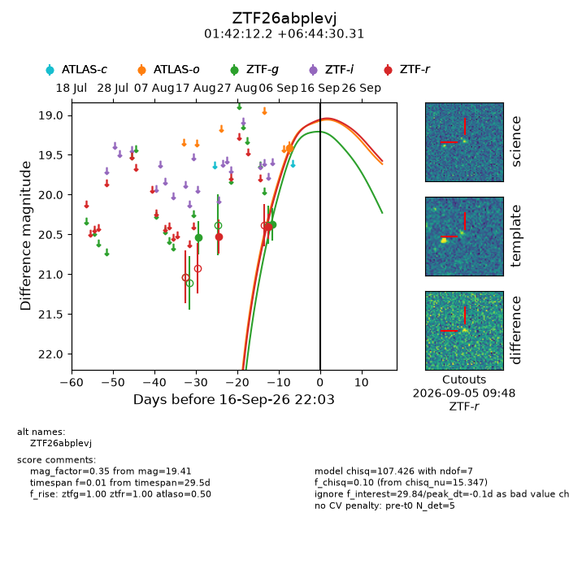
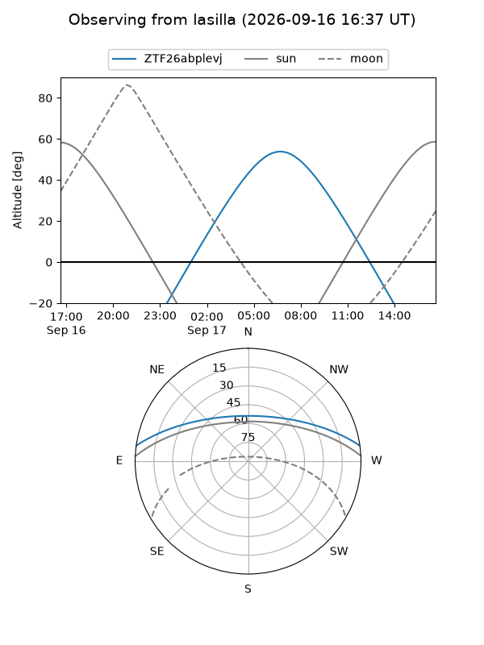
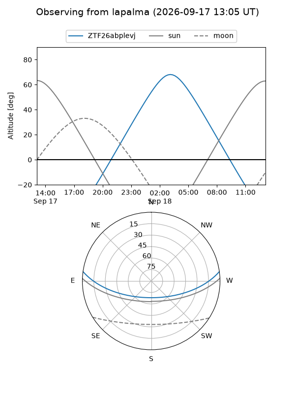
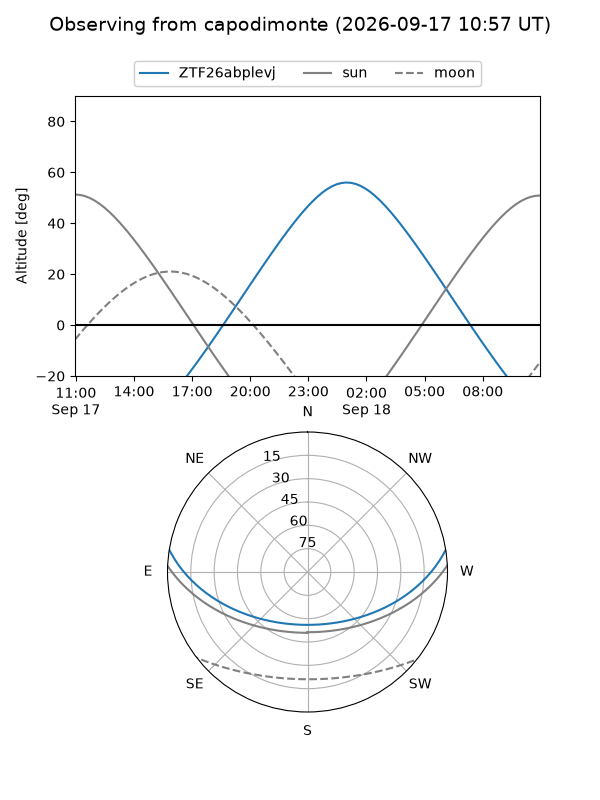
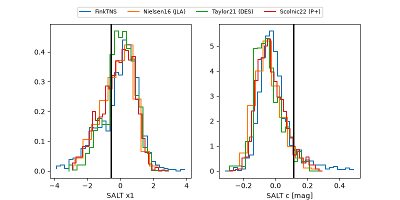

ZTF26abplevj
Target ZTF26abplevj at 2026-09-17 09:25
Aliases and brokers:
FINK-ZTF: ztf.fink-portal.org/ZTF26abplevj
Lasair-ZTF: lasair-ztf.lsst.ac.uk/objects/ZTF26abplevj
ALeRCE-ZTF: alerce.online/object/ZTF26abplevj
Direct TNS query: direct search
alt names
ZTF26abplevj (ztf,fink_ztf)
Coordinates:
equatorial (ra, dec) = 25.5508,+6.74175
equatorial (HMS+DMS) = 01:42:12.19,+06:44:30.31
galactic (l, b) = (144.7044,-53.97010)
Flags:
peak dt: +0.3
Photometry:
last atlaso=19.41, ztfg=20.37, ztfr=20.40
1 atlaso, 2 ztfg, 2 ztfr detections
Lightcurve

Visibility



Additional plots
